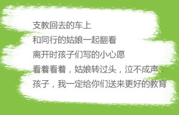
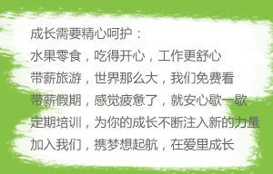
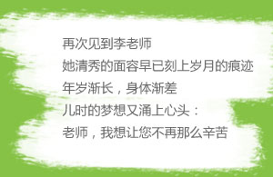
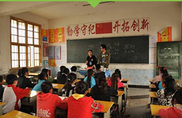
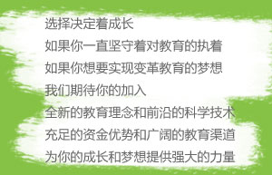

- 
- 
- 
- 
- 
- 技术类
- 设计类
- 运营类
- 产品类
- 职能类
- 职位
- 类别
- 薪资
- 工作地
-
java软件开发工程师
技术类
面议
济南高新区
- 岗位职责
- ①参与产品功能模块的概要设计和详细设计；
- ②参与产品功能模块的代码编写和单元测试；
- ③参与项目需求分析、系统框架和各功能模块的详细设计；
- ④根据新产品开发进度和任务分配，开发相应的软件模块；
- 任职要求
- ①大专及以上学历，计算机相关专业，一年以上工作经验；
- ②精通java编程，熟练掌握常用的J2EE框架：SPring、Struts等，有2年以上开发经验；
- ③熟练掌握mysql和mongoDB等数据库的分析设计和调优；
- ④参加过中大型互联网项目系统框架，对设计模式熟悉，熟练的使用SSI或SSH、搭建中大型系统框架优先；
- ⑤有良好的团队精神和协调能力，积极主动，乐于接受挑战，能承受工作压力；
- 简历投递地址：hr@jiaocaijiedu.com
- 简历投递格式请以“应聘职位+姓名”作为邮件标题。
-
高级java开发工程师
技术类
面议
济南高新区
- 岗位职责
- ①负责产品功能模块的概要设计和详细设计；
- ②负责产品功能模块的代码编写和单元测试；
- ③参与项目需求分析、系统框架和各功能模块的详细设计；
- ④根据新产品开发进度和任务分配，开发相应的软件模块；
- ⑤独立带团队，技术攻关。
- 任职要求
- ①大专及以上学历，计算机相关专业；
- ②精通java编程，熟练掌握常用的J2EE框架：SPring、Struts等，有3-5年开发经验；
- ③熟练掌握HTML5，CSS3，JAVAscript等浏览器的前端编程技术优先，了解REST http API 、RPC Service等技术；
- ④熟练掌握mysql和mongoDB等数据库的分析设计和调优；了解fastDFS 分布式文件系统等；
- ⑤负责设计过中大型互联网项目系统框架，对设计模式熟悉，熟练的使用SSI或SSH、搭建中大型系统框架；
- ⑥全面并且扎实软件知识结构（操作系统、软件工程、设计模式、数据结构、数据库系统、网络安全）；
- ⑦熟悉面向对象的建模和设计，掌握面向对象的开发方法，能够熟悉运用设计模式及重构方法；
- ⑧有较强的编码规范能力，一定需求分析能力，一定的文档编辑能力；
- ⑨具备良好的分析解决问题能力，好学、责任心强、思维缜密敏捷、良好的对外沟通和团队协作能力，能独自带团队；
- 简历投递地址：hr@jiaocaijiedu.com
- 简历投递格式请以“应聘职位+姓名”作为邮件标题。
-
高级web前端研发leader
技术类
面议
济南高新区
- 岗位职责
- ①独立承担pc端和移动端的前端开发任务；
- ②互联网产品所需页面的制作和前端效果的实现；
- ③整体页面结构及样式层结构的设计、优化；
- ④完成页面脚本程序编写、实现各类页面动态、交互效果；
- ⑤与产品、设计师、开发人员配合，根据需求调整、修改、优化页面。
- ⑥能够理解后端架构，与后端工程师配合，为项目提供最优化的技术解决方案；
- ⑦解决网站页面各浏览器下的兼容问题；
- ⑧可以独立带团队，攻关技术难点。
- 任职要求
- ①3年以上前端开发工作经验，有互联网产品前端开发经验者优先；
- ②熟练掌握HTML5、CSS3、JavaScript、JQuery、Ajax、Angular.js等前端技术；精通DIV＋CSS页面布局等；
- ③能开发产品通用的前端页面组件；
- ④对用户体验、交互操作流程、及用户需求有一定了解；
- ⑤具备良好的责任心、较强的学习能力、优秀的团队沟通与协作能力；
- ⑥对前端技术的发展趋势保持关注，能不断学习业界新技术,喜欢创新，愿意不断尝试新方法。
- ⑦有带团队经验，领导5人的web前端leader；
- ⑧三年以下工作经验者勿扰！
- 简历投递地址：hr@jiaocaijiedu.com
- 简历投递格式请以“应聘职位+姓名”作为邮件标题。
- 职位
- 类别
- 薪资
- 工作地
-
UI设计师
设计类
面议
济南高新区
- 岗位职责
- ①具备PC端、移动端产品用户界面研究、设计流行趋势分析；
- ②根据客户需求以及设备平台特性制定产品UI设计规范，能独立设计效果图，能独立组织界面的关键元素（布局、功能、按钮、风格、特效）；
- ③能制定清晰的体验目标，设计用户场景、概念原型、交互流程、高保真线框图及原型，结合用户体验优化及完善流程；
- ④分享设计经验、推动提高团队的效率以及设计能力；
- ⑤从事过3年以上UI设计，懂设计方法论和用户体验设计者优先。
- 任职要求
- ①大专及以上学历，专业不限，美术类、设计类专业优先；
- ②三年以上设计类行业工作经验，做过至少一个中大型互联网项目；
- ③熟悉网站，android，IOS平台设计规范，有WEB，APP或HTML界面设计经验（如有作品，需提供案例和作品），能独立完成网站、移动端产品的设计；
- ④熟悉互联网产品设计流程，有独立完成产品或界面的设计能力，参与过中大型教育平台或电商平台设计公司工作经验优先；
- ⑤熟练掌握photoshop、illustrator、corelDraw或Dreamwear等专业软件，对互联网设计趋势敏感；
- ⑥良好的沟通表达能力、善于合作，能够与产品、重构、开发等进行紧密的配合，确保设计在产品中落地。
- ⑦心态乐观、自我要求高、学习能力强、能承受一定工作压力。
- 简历投递地址：hr@jiaocaijiedu.com
- 简历投递格式请以“应聘职位+姓名”作为邮件标题。
- 职位
- 类别
- 薪资
- 工作地
-
网站运营
运营类
面议
济南高新区
- 岗位职责
- ①负责网站总体运营与策划，网站产品的整体推广与销售及与学校与合作单位的洽谈与合作；
- ②负责云平台项目等的开发与运营，平台内容的策划与定制服务；
- ③负责网站内容整体策划与运营管理，部门日常工作管理与沟通，公司层面政策的传达与执行；
- ④负责产品的规划、搭建和运营，制定产品运营模式、策略及目标；制定产品运营与升级的指标及监控流程，并指导监督实施；
- ⑤协助制定网站业务流程和活动计划。
- ⑥提高网站知名度和品牌影响力，负责对外合作的接洽工作，提高网站浏览，协助扩大销售量；
- ⑦部门人员的组建和管理，保障运营队伍达成公司网站运营目标；
- ⑧负责运营团队的管理，分析和监控网站的运营状况，针对运营中出现的问题，提出解决方案并监督执行。
- 任职要求
- ①大专及以上学历，有工作经验者优先考虑；
- ②热衷研究、体验各类互联网产品；
- ③熟悉用户体验，较强的逻辑分析能力；
- ④抗压能力强；对工作有责任心、积极主动完成工作；
- ⑤踏实、悟性高，快速学习能力；
- 简历投递地址：hr@jiaocaijiedu.com
- 简历投递格式请以“应聘职位+姓名”作为邮件标题。
-
网站客服
运营类
面议
济南高新区
- 岗位职责
- ①通过沟通与客户建立良好的联系，熟悉及挖掘客户需求；
- ②负责对客户的咨询、查询等问题给予正确和满意的解答；
- ③负责产品介绍、及客户使用问题等服务；
- ④负责客户电话回访、跟进及处理客户投诉等问题；
- ⑤负责做好工作日志、周报、月报，及时反馈信息的统计、分析和汇报。
- ⑥完成上级安排的其他工作任务。
- 任职要求
- ①女，27岁以下，大专以上，专业不限，应届毕业生也可；
- ②office办公软件使用较熟练；
- ③普通话标准、流利，声音甜美，反应灵敏；
- ④具有良好的团队协作能力及执行能力和客户服务意识；
- ⑤善于沟通协调，敬业、勤恳，做事细心；
- 简历投递地址：hr@jiaocaijiedu.com
- 简历投递格式请以“应聘职位+姓名”作为邮件标题。
- 职位
- 类别
- 薪资
- 工作地
-
学科编辑
产品类
面议
济南高新区
- 岗位职责
- ①负责对应学科网站的内容的规划、组织与建设；
- ②紧抓学习热点，产出高质量的学科内容，对整体内容质量负责；
- ③负责后台内容的上传、更迭，保证内容及时更新；
- ④参与调研活动，了解一线教学教研信息和用户需求，进一步确保内容及形式与一线教学要求相符；
- ⑤网站相应学科各内容版块的管理工作；
- ⑥收集、处理网站用户的意见和反馈信息。
- 任职要求
- ①全日制本科及以上学历，相应专业或相近的专业；
- ②具有扎实的专业基础知识、较强的编辑知识和技能，具有较强的语言文字表达能力，熟练应用office办公软件；
- ③具有较强的责任心和优良的职业道德，具有良好的承压能力和团队合作意识；
- ④熟悉网络编辑规范；
- ⑤具备收集信息和敏捷的信息反应能力；
- ⑥热爱教育行业，有从事网络编辑的职业规划；
- ⑦工作经验不限，有教学经验或图书编辑工作经验者优先。
- 简历投递地址：hr@jiaocaijiedu.com
- 简历投递格式请以“应聘职位+姓名”作为邮件标题。
- 职位
- 类别
- 薪资
- 工作地